역기획서 · 원신
원신 몬드 레벨디자인 역기획
몬드성 · 신상 기준점, 외곽 보스 · 보상 배치, 정비 · 탐험 순환에 따른 탐험 범위 확장 구조 분석, 개선안 제안.
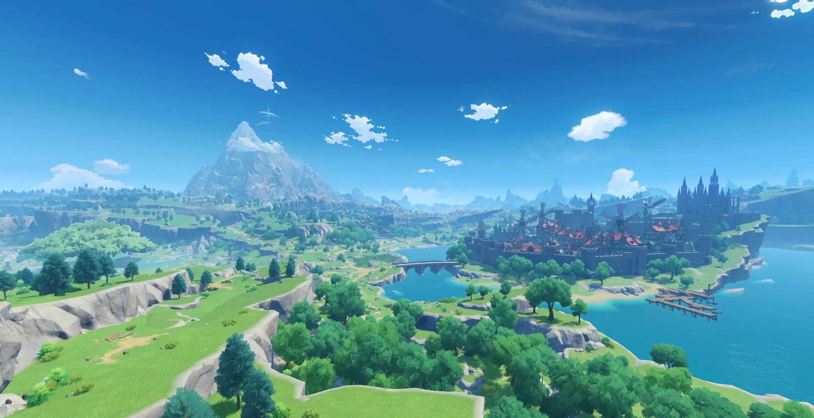
레벨디자인 역기획 · 포트폴리오
원신 — 몬드성과 주변 지역
레벨디자인 역기획서
출시 버전(1.0) 기준 · 드래곤 스파인 제외
장대규
jdk47888@naver.com · 010-8854-7342
분석 주제: 몬드성 기준 배치와 탐험 범위의 단계적 확장
01 / 21
표지. 배경: 몬드 공식 풍경 이미지(UI 없음).
목차
1부: 게임·지역 개요 / 2부: 배치 분석과 개선 제안
1부
개요
04 — 08
원신 소개
04
게임 개요
장르 · 이동 방식 · 스태미나
05 — 06
화면 구성 요소 · 실제 플레이 화면
신상 · 눈동자 · 워프 · 지도
07
몬드 1.0 지도
4개 구역 · 몬드성 · 신상 위치
08
스태미나 — 이동 능력치
상한 = 도달 가능 범위
2부
레벨디자인
10 — 21
몬드의 레벨디자인 설계
A 10 — 12
기준점 — 몬드성·신상 배치
첫 시선 · 신상 거리 · 배치 기준 비교
B 13 — 15
외곽 배치 — 폐허·보스·보상
진입 조건 · 거리 · 보상 구조
C 16 — 17
정비·탐험 순환
몬드성 · 신상 · 워프 배치(초안)
D 18
종합 — 탐험 범위 확장
3개 층 구조
E 19 — 20
개선 제안 · 검증 계획
외곽 정비 거점
21
결론
목차
02 / 21
좌측 1부, 우측 2부.
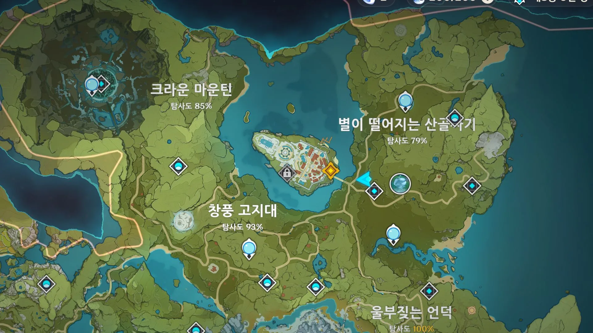
1부
개요
게임 규칙 · 지역 구성
— 분석 전제 조건
1부 · 개요
03 / 21
1부 · 개요 간지.
게임 개요
스태미나 기반 이동으로 지형을 탐험하는 오픈월드 액션 RPG
| 항목 | 내용 |
|---|---|
| 장르 | 오픈월드 액션 RPG · 원소 반응 전투 |
| 개발 · 출시 | HoYoverse · 2020년 9월 |
| 플랫폼 | PC · 모바일 · 콘솔 |
| 이동 방식 | 달리기 · 등반 · 활공 · 수영 (스태미나 소모) |
| 이동 능력치 | 스태미나 — 상한이 탐험 가능 범위를 결정 |
| 성장 축 | 일곱 신의 신상 — 바람 신의 눈동자 헌납 시 스태미나 상한 증가 |
| 첫 지역 | 몬드 — 활공·등반 학습 구간 |
| 분석 범위 | 출시 버전 1.0의 몬드 (드래곤 스파인 제외) |
분석 대상 선정 사유 — 몬드 1.0
- 출시 당시 설계 원형 유지 — 후속 패치 영향 없음
- 활공·등반 이동 규칙을 학습시키는 첫 지역
- 몬드성이 지역 중앙에 위치 — 기준점 중심 배치 분석에 적합
1부 · 개요
04 / 21
분석 대상은 이동 규칙과 지형 배치임. 캐릭터는 분석 대상 외.
화면 구성 요소
좌: 탐험 화면 · 우: 주요 UI·기믹 9종. 분석 관련 항목은 붉은 테두리로 표시함
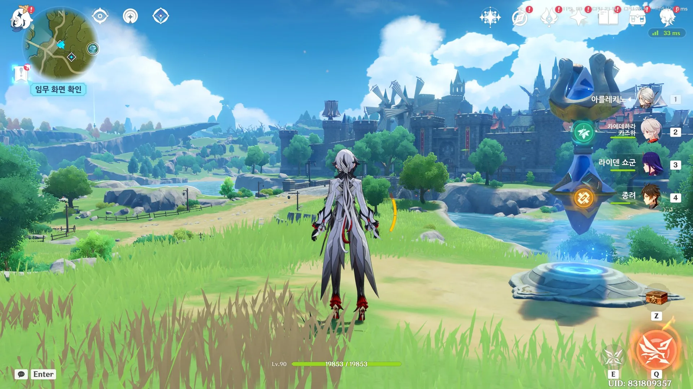

스태미나 바
소모·회복 상태 표시
등반
스태미나 소모 이동
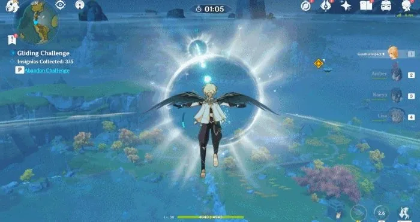
활공
고지대 → 장거리 이동
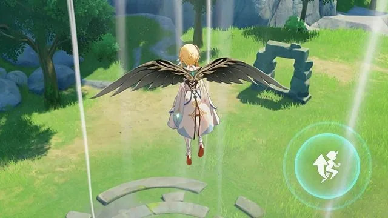
바람 기류
상승 기류 (소모 없음)
일곱 신의 신상
HP 회복 · 상한 증가
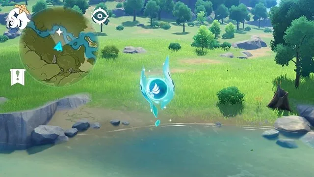
바람 신의 눈동자
스태미나 최대치 증가
워프 포인트
빠른 이동 · 귀환
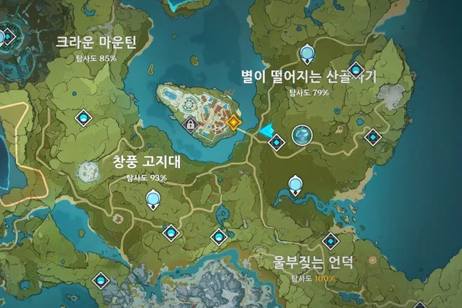
전체 지도
4개 구역 + 몬드성
미니맵
랜드마크·워프 아이콘
1부 · 개요
05 / 21
붉은 테두리: 스태미나 바, 일곱 신의 신상, 워프 포인트.
실제 탐험 화면
미편집 탐험 화면 — 지형 · UI 배치 참고
촬영 위치: 시드르 호수 건너편 워프 포인트
1부 · 개요
06 / 21
전체 스크린샷 자리. 다른 장면으로 교체 가능.
몬드 1.0 지도 — 4개 구역 · 몬드성
몬드성(★) 중심으로 4개 구역 배치. 구역마다 신상 1개(붉은 원) 배치
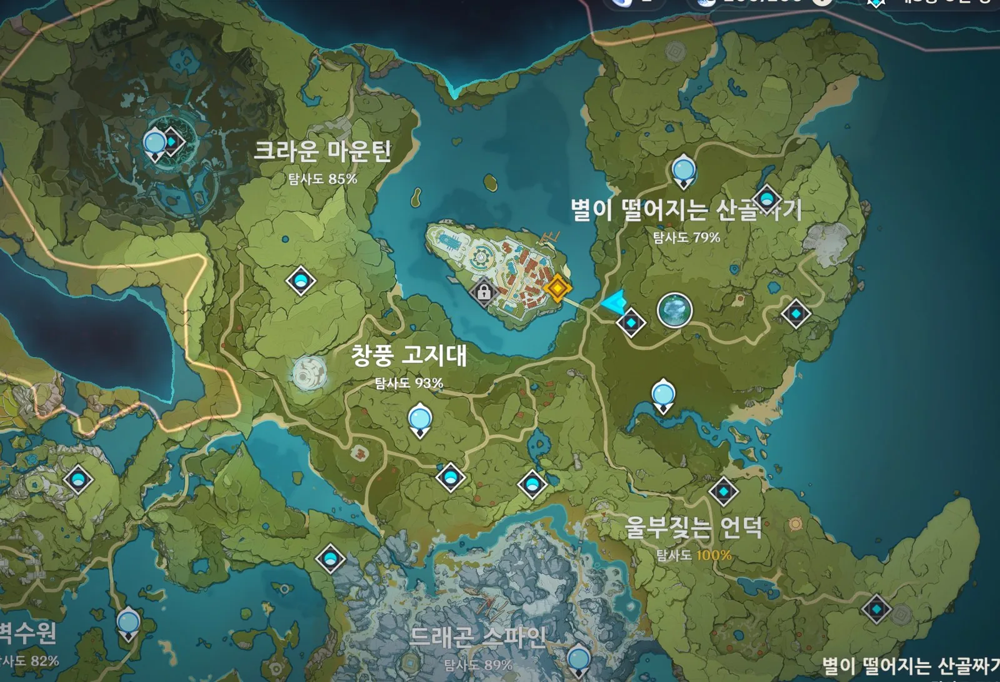
★
★ 몬드성 (기준점)
○ 일곱 신의 신상 4곳
구역명: 한국어 서비스 표기 기준
4개 구역 · 구역당 신상 1개
- 별이 떨어지는 산골짜기 — 시작 지점 · 몬드성 포함
- 크라운 마운틴 — 바람 드래곤의 폐허 (최고 난이도)
- 창풍 고지대 — 다운 와이너리 · 울프 영지
- 울부짖는 언덕 — 바람이 시작되는 곳 · 매의 해안
몬드성 — 시드르 호수 중앙
호수가 사방을 둘러 시야 차단 요소 없음. 전 구역에서 몬드성을 기준으로 방향 파악 가능
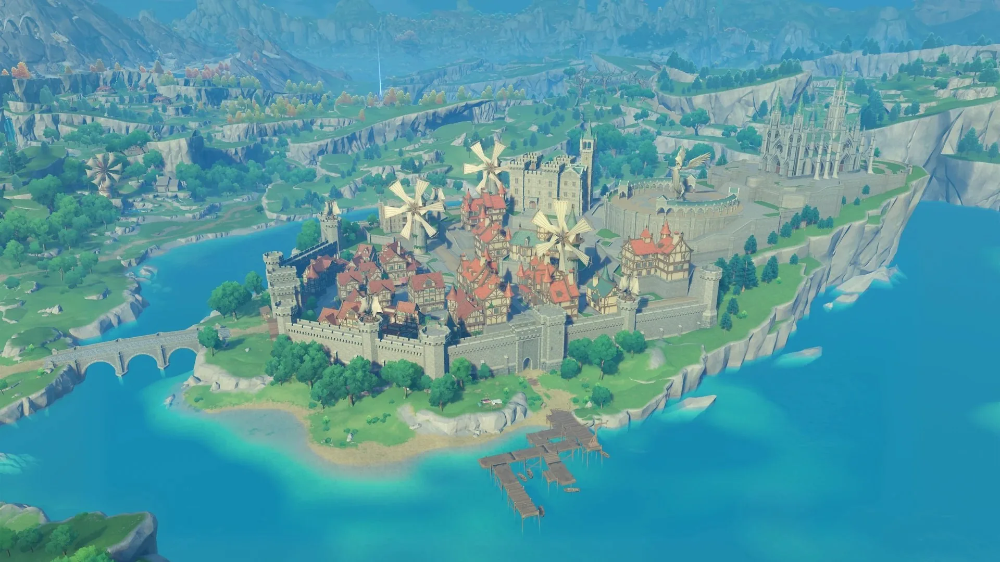
호수 위 섬 — 사방 개방
육지 연결 다리 1개
1부 · 개요
07 / 21
신상 아이콘 4개, 구역당 1개. 드래곤 스파인은 분석 범위 외.
스태미나 — 이동 능력치
스태미나는 소모 자원이 아니라 이동 가능 높이·거리를 결정하는 능력치로 정의함
100
초기값
신상 레벨업 전
활공
33초
등반 점프
4회
도달 범위
신상 링
170
몬드 신상 10레벨
바람 신의 눈동자 65개 헌납 (+70)
활공
57초
등반 점프
6회
도달 범위
폐허 · 외곽 절벽
240
리월 신상 포함
후속 지역 — 본 분석 범위 외
활공
80초
등반 점프
9회
도달 범위
전 지역
★ 몬드성
100 — 저지대 언덕까지
170 — 고지대 절벽까지
스태미나 상한 = 도달 가능 범위
상한 증가 효과
- 등반 가능 높이 증가
- 활공 거리 증가 (초당 3 소모, 상한에 비례)
- 휴식 횟수 감소 — 탐험 효율 향상
스태미나 0 도달 시
- 등반 중 → 추락 (낙하 피해, 높이에 따라 사망)
- 활공 중 → 추락
- 수영 중 → 익사 (즉시 사망)
낙사 기준 높이 · 수영 지속 시간은 실측 후 기입
설계 의도
상한은 신상·눈동자로만 증가함. 탐험량에 비례해 이동 가능 범위가 확장되도록 설계함
1부 · 개요
08 / 21
활공 소모 초당 3: 100은 33초, 170은 57초, 240은 80초. 등반 점프 소모 25: 4·6·9회. 몬드 신상 10레벨 +70(눈동자 65개).
2부
레벨디자인
기준점 → 외곽 배치 → 정비·탐험 순환 → 종합 → 개선 제안
2부 · 레벨디자인
09 / 21
2부 · 레벨디자인 간지.
기준점 — 시작 지점에서 보이는 몬드성
시작 지점 시야에 몬드성이 들어오도록 지형을 구성함. 목표 지점이자 귀환 지점을 첫 화면에서 제시함
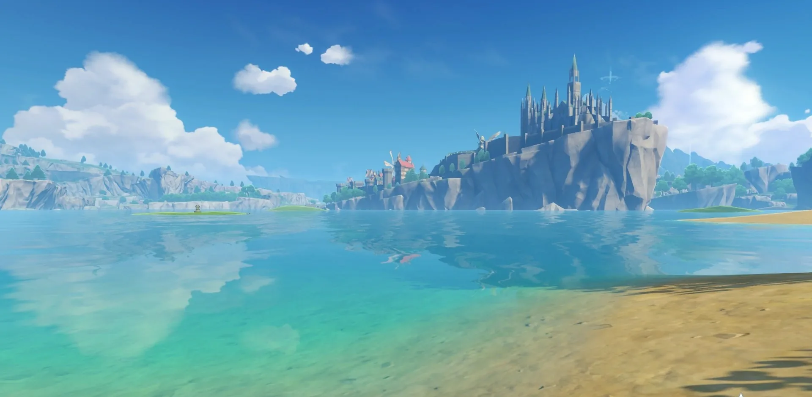
몬드성 — 전 지역에서 보이는 기준점
시드르 호수 — 시야 차단 요소 없음
저지대 — 시작 지점 방향
시야 구성
- 시작 지점은 호수 건너편 저지대
- 언덕 진입 시 시야 개방 — 정면에 몬드성
- 지도 확인 전 방향 기준 확보
설계 의도
화살표·마커 대신 지형과 랜드마크로 초반 동선을 유도함. 목표 지점과 귀환 지점을 동일하게 설정함
A
첫 시선
신상 거리
배치 기준
|
B
폐허
보스
보상
|
C
순환
워프
|
D
3개 층
|
E
제안
검증
2부 · A 기준점 — 몬드성·신상 배치
10 / 21
시드르 호수 공식 풍경.
신상 배치 — 몬드성 기준 동일 거리
신상 3개는 몬드성 기준 1.0~1.3 거리에, 폐허 신상 1개만 2.2 거리에 배치됨
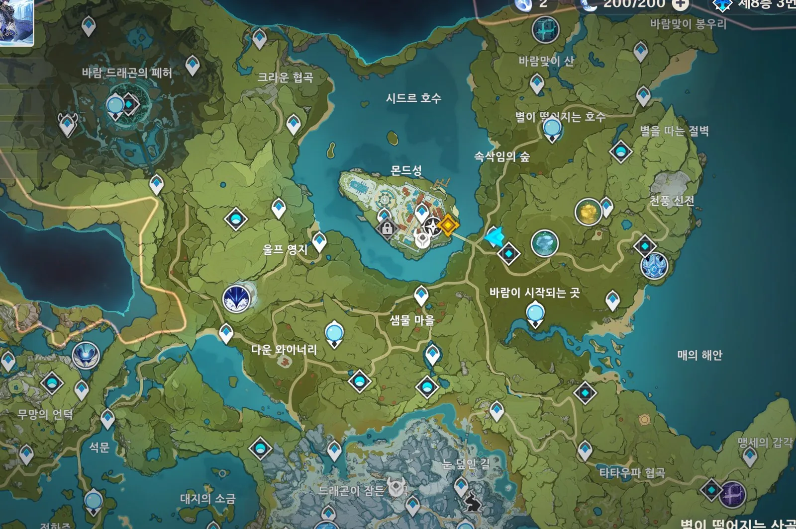
다운 와이너리
바람이 시작되는 곳
별이 떨어지는 호수
바람 드래곤의 폐허
★
몬드성 (기준점)
몬드성 → 신상 거리 (최근접 = 1.0)
다운 와이너리
1.00
바람이 시작되는 곳
1.25
별이 떨어지는 호수
1.27
바람 드래곤의 폐허
2.20
지도상 직선거리 기준
설계 의도
초반 탐험 방향과 무관하게 첫 신상까지 거리를 동일하게 유지함. 탐험 순서를 강제하지 않음
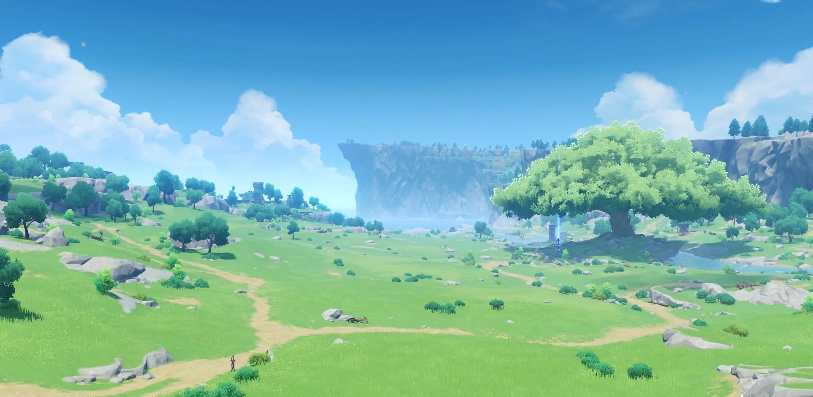
신상 링 구간 — 완만한 언덕, 도보 접근 가능
A
첫 시선
신상 거리
배치 기준
|
B
폐허
보스
보상
|
C
순환
워프
|
D
3개 층
|
E
제안
검증
2부 · A 기준점 — 몬드성·신상 배치
11 / 21
띠: 신상 3개의 거리 범위. 붉은 원: 폐허 신상 거리. 좌표: 지도 화면 아이콘 위치 기준.
배치 기준 비교 — 구역 중심 vs 몬드성 중심
구역 중심 배치 시 구역별 거리 편차 발생. 몬드성 중심 배치 시 전 방향 거리 동일
A. 구역 중심 배치
1.2
1.0
1.2
1.7
★
구역별 거리 편차 발생 (1.0~1.7) — 원거리 구역은 탐험 후순위가 됨
B. 몬드성 중심 배치 (실제)
1.0
1.0
1.0
1.0
★
전 방향 동일 거리 (1.0) — 탐험 순서 자유
기준점은 구역이 아닌 플레이어 위치(몬드성)임. 신상 3개는 동일 거리에, 폐허 신상 1개만 원거리에 배치함
A
첫 시선
신상 거리
배치 기준
|
B
폐허
보스
보상
|
C
순환
워프
|
D
3개 층
|
E
제안
검증
2부 · A 기준점 — 몬드성·신상 배치
12 / 21
개념도. 숫자는 몬드성 기준 상대 거리.
외곽 배치 ① 바람 드래곤의 폐허
최원거리 신상(2.2)은 거리·장벽·고저차 3중 조건으로 후반 진입을 유도함
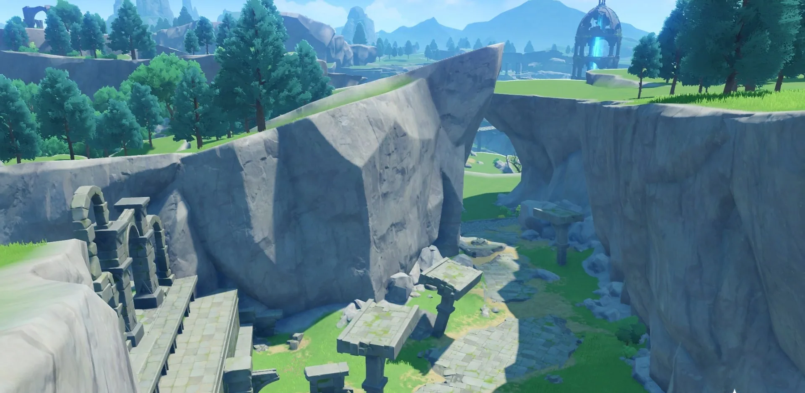
협곡 입구 — 절벽 지형
절벽 등반 · 활공 횡단 구간
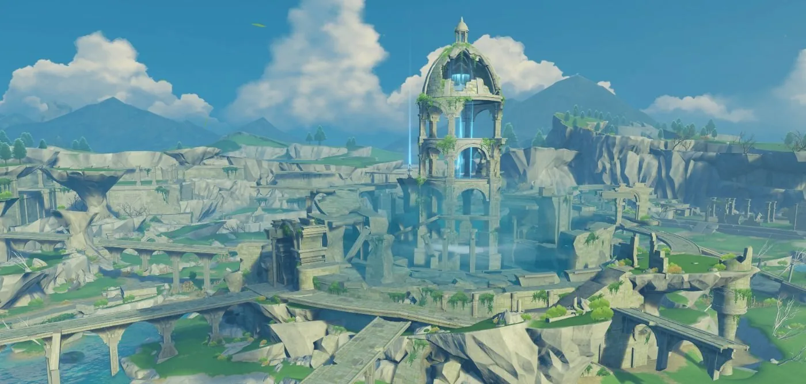
폭풍 장벽 내부 — 최원거리 신상
높은 고저차 — 스태미나 소모 증가
상: 크라운 협곡 입구 · 하: 바람 드래곤의 폐허
① 거리 — 타 신상 대비 2.2배
최근접 신상 1.0 기준 2.2. 나머지 신상 3개는 1.0~1.3에 밀집
② 장벽 — 스토리 진행 조건
폭풍 장벽으로 봉쇄. 서막 퀘스트 진행 전 진입 불가
③ 고저차 — 이동 능력 조건
주변 지형지물이 높아 스태미나 100으로는 한 번에 등반 불가. 신상 레벨업(170)과 활공 숙련 후 진입 가능
A
첫 시선
신상 거리
배치 기준
|
B
폐허
보스
보상
|
C
순환
워프
|
D
3개 층
|
E
제안
검증
2부 · B 외곽 배치 — 폐허·보스·보상
13 / 21
등반 1회 도달 높이는 실측값으로 보강 예정.
외곽 배치 ② 보스
일반 보스 3종 · 주간 보스 2종 모두 신상 링(1.0~1.3) 외곽에 배치. 보상은 성장 재료
안드리우스 · 1.3
무상의 바람 · 1.7
바람 드래곤 · 2.2
얼음 나무 · 1.9
무상의 뇌전 · 3.3
★
몬드성 (기준점)
| 보스 | 구분 | 거리 | 보상 | 레진 |
|---|---|---|---|---|
| 안드리우스 | 주간 | 1.3 | 특성 재료 | 60 |
| 무상의 바람 | 일반 | 1.7 | 돌파 재료 | 40 |
| 얼음 나무 | 일반 | 1.9 | 돌파 재료 | 40 |
| 바람 드래곤 | 주간 | 2.2 | 특성 재료 | 60 |
| 무상의 뇌전 | 일반 | 3.3 | 돌파 재료 | 40 |
거리: 최근접 신상 = 1.0 (신상 링 1.0~1.3). 레진: 1.0 기준 보상 수령 비용
설계 의도
보스 보상은 캐릭터 돌파·특성 재료임. 이동 숙련과 스태미나 상한 확보 후 도달하도록 보스 전체를 신상 링 외곽에 배치함. 주간 보스는 스토리 진행 후 해금됨
A
첫 시선
신상 거리
배치 기준
|
B
폐허
보스
보상
|
C
순환
워프
|
D
3개 층
|
E
제안
검증
2부 · B 외곽 배치 — 폐허·보스·보상
14 / 21
일반: 무상의 바람(바람맞이 산), 무상의 뇌전(맹세의 갑각), 얼음 나무(천풍 신전 남쪽). 주간: 안드리우스(울프 영지), 바람 드래곤(폐허). 적 레벨은 월드 레벨 기준임. 난이도는 구분·해금 조건으로 표기함.
외곽 배치 ③ 보상 — 비경·상자·군락
보상 체계 3종 모두 몬드성에서 멀수록 가치가 높음. 획득 재료로 성장 → 탐험 범위 확장
1
2
3
4
5
6
7
8
● 비경 ①~⑧ · ✕ 화려한 상자 · ▲ 엘리트 군락
★
몬드성 (기준점)
비경(재화 획득처) ● — 스토리용은 링 인접, 파밍용은 외곽
- ① 각인의 골짜기 ② 잊혀진 협곡 ③ 세실리아의 모밭 ④ 한 여름의 정원 — 파밍 비경(무기·특성 재료, 반복 방문), 모험 등급 조건
- ⑤ 서풍 매의 사당 ⑥ 북풍 늑대의 사당 ⑦ 남풍 사자의 사당 ⑧ 매의 문 — 스토리 비경(1회)
화려한 상자 ✕ — 군락 소탕·퍼즐 조건
- 타타우파 협곡 — 캠프 3곳 소탕 후 요새 개방
- 천풍 신전 — 유적 가디언 처치
엘리트 군락 ▲ — 외곽 집중
- 미타추르 · 심연 메이지 · 유적 가디언: 천풍 신전, 바람맞이 봉우리, 타타우파 협곡, 폐허 — 처치 시 성장 재화 획득
- 신상 링 내부: 힐리추르 소규모 야영지·슬라임 위주
A
첫 시선
신상 거리
배치 기준
|
B
폐허
보스
보상
|
C
순환
워프
|
D
3개 층
|
E
제안
검증
2부 · B 외곽 배치 — 폐허·보스·보상
15 / 21
비경 번호 위치: 지도 아이콘 기준 초안. 이름 대응 확인 필요. 상자 등급: 일반·정교·진귀·화려.
정비·탐험 순환 — 몬드성, 신상, 워프
탐험 → 귀환 → 정비 → 재탐험 순환. 신상(HP 회복)과 워프(이동 단축)가 왕복 비용을 낮춤
★ 몬드성 — 정비
상점 · 모험가 길드
제작 · 요리
외곽 — 탐험
신상 — HP 회복
상자 · 군락 · 비경 · 보스
— 성장 재료
출발 — 워프로 신상까지
귀환 — 워프로 몬드성까지
몬드성 집중 기능
상점 · 모험가 길드 · 제작대 — 성장·정비 기능을 성에 집중
외곽 분산 기능
신상 HP 회복, 워프 포인트 분산 배치 — 출발·귀환 비용 절감
설계 의도
정비-탐험 왕복 비용을 최소화함. 귀환 비용이 낮을수록 탐험 반경이 확대됨
A
첫 시선
신상 거리
배치 기준
|
B
폐허
보스
보상
|
C
순환
워프
|
D
3개 층
|
E
제안
검증
2부 · C 정비·탐험 순환
16 / 21
몬드성 기능과 외곽 기능의 분담 구조.
워프 포인트 배치 분석 (초안)
몬드 1.0 워프 21곳을 지도에서 식별. 간격·위치 규칙은 확인 후 확정 예정
◆ 워프 포인트 21곳 (신상 4곳 별도) · 띠 = 신상 링
★
몬드성 (기준점)
워프 수
21 + 신상 4
평균 최근접 간격
0.65
신상 링 안 / 밖
6 / 15
간격 단위: 몬드성→최근접 신상 거리 = 1.0
배치 규칙 (가설)
- ① 갈림길·구역 경계 — 도로 교차점 인접 배치
- ② 고지대 — 절벽 위·고원에 배치해 활공 출발점 역할
- ③ 보스·비경 인접 — 반복 방문 지점의 이동 비용 절감
확인 필요
- 워프 좌표는 지도 화면 아이콘에서 추출 — 누락 가능
- 고저차(②)는 현장 스크린샷 2~3장으로 검증 예정
A
첫 시선
신상 거리
배치 기준
|
B
폐허
보스
보상
|
C
순환
워프
|
D
3개 층
|
E
제안
검증
2부 · C 정비·탐험 순환
17 / 21
초안. 워프 수·간격은 지도 아이콘 기준 산출. 드래곤 스파인·리월 쪽 워프 제외.
종합 — 성장에 따른 탐험 범위 확장
몬드성 중심 3개 층: 정비(중심) → 초반 탐험(신상 링) → 성장 후 탐험(외곽)
★
몬드성
신상 링 — 동일 거리
외곽 — 폐허 · 보스
| 층 | 구성 요소 | 진입 시점 |
|---|---|---|
| 중심 — 몬드성 | 상점 · 길드 · 제작 · 요리 | 상시 귀환 |
| 신상 링 | 신상 3 · 일반 상자 · 스토리 비경 | 초반 — 전 방향 동일 |
| 외곽 | 폐허 · 보스 5 · 화려한 상자 · 파밍 비경 | 스태미나 상한 · 스토리 진행 후 |
외곽으로 갈수록 요구 조건 증가(스태미나 · 활공 · 스토리). 성장량에 비례해 탐험 가능 반경 확대
A
첫 시선
신상 거리
배치 기준
|
B
폐허
보스
보상
|
C
순환
워프
|
D
3개 층
|
E
제안
검증
2부 · D 종합 — 범위 확장
18 / 21
11·14·15장 지도를 개념도 1장으로 정리함.
개선 제안 — 외곽 정비 거점 신설
몬드성 기능 유지. 일반 보스 3곳 인근에 제작·회복 전용 전초 기지 배치
현행 — 보스마다 몬드성 왕복
★
◆ 보스
보스 3곳 순회 시 몬드성 복귀 3회. 외곽 체류가 보스마다 중단됨
제안 — 외곽 정비 거점(전초 기지) 3개소
★
◆ 보스 ■ 전초 기지
보스 → 전초 기지 → 보스 연속 이동. 몬드성 복귀 0회
변경점
일반 보스 3곳 인근에 제작대·HP 회복만 제공하는 전초 기지 3개소 신설. 상점·모험가 길드는 몬드성에 유지. 워프 배치 유지
기대 이득
보스 순회 시 몬드성 복귀 3회 → 0회. 성장 완료 플레이어의 외곽 체류 시간 증가. 초반 동선 변화 없음
A
첫 시선
신상 거리
배치 기준
|
B
폐허
보스
보상
|
C
순환
워프
|
D
3개 층
|
E
제안
검증
2부 · E 개선 제안·검증
19 / 21
클래시로얄 편 '중앙 개방'과 같은 형식임. 기존 규칙 안에서 요소 1개만 추가함.
검증 계획
변경 요소는 전초 기지 3개소뿐임. 차이는 성장 후 동선에서만 발생함
검증 설계
- 대상 — 몬드 1.0 원본 vs 전초 기지 3개소 추가본
- 측정 지표 — 세션당 몬드성 복귀 횟수, 외곽 체류 시간, 보스 간 직접 이동 횟수
- 집단 — 신상 10레벨 완료 플레이어 2개 집단
- 성공 기준 — 외곽 체류 시간 증가, 복귀 횟수 감소, 초반 동선 변화 없음
기대 효과
- 성장 완료 플레이어의 탐험 반경 1단계 확장
- 보스 순회 동선이 몬드성 경유 없이 연결됨
- 전초 기지는 초반에 노출되지 않음 — 초반 구조 영향 없음
리스크 및 대응
- 몬드성 중심성 약화 → 상점·길드는 몬드성에만 유지
- 초반 플레이어의 전초 기지 선발견 시 난이도 급락 → 보스 인접 배치로 초반 접근 차단
- 귀환 빈도 감소로 워프 활용도 하락 → 허용 범위로 판단
A
첫 시선
신상 거리
배치 기준
|
B
폐허
보스
보상
|
C
순환
워프
|
D
3개 층
|
E
제안
검증
2부 · E 개선 제안·검증
20 / 21
측정 지표는 직접 세션에서 기록 가능한 항목으로 선정함.
결론
몬드 배치의 핵심은 탐험 순서 지정이 아닌, 성장에 따른 탐험 범위의 단계적 확장임
기준점 — 몬드성
- 전 지역에서 보이는 몬드성을 첫 화면에 배치
- 신상 3개를 동일 거리에 배치 — 탐험 순서 자유
외곽 — 난이도·보상
- 폐허는 거리·장벽·고저차로 후반 진입 유도
- 보스·고가치 보상은 성장 후 도달하도록 외곽 배치
순환 — 정비·귀환
- 정비는 몬드성, 회복은 신상, 귀환은 워프로 분담
- 왕복 비용 절감 → 탐험 반경 확대
설계 의도
탐험 편의를 제공함. 플레이어 성장(전투력, 스태미나)과 스토리 진행도에 따라 탐험 범위를 확장함.
(1.0 버전 구조에서 성립하는 설계)
결론
21 / 21
세 열은 2부 A·B·C에 대응함.